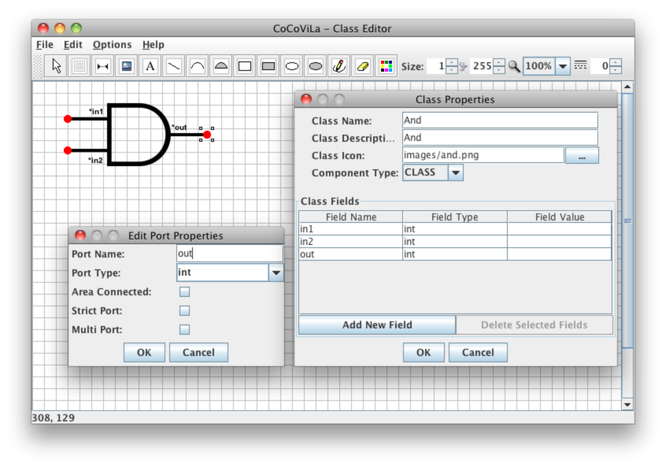

CoCoViLa is a model-based software development platform
The platform provides a framework for developing visual specification languages. It includes a visual editor for drawing schemes and a synthesizer for generating Java programs from visual schemes and declarative textual specifications.
DownloadGetting started
Simple tutorials of using CoCoViLa applications — Class Editor and Scheme Editor — can be found in the
Documentation section. The packages directory included in CoCoViLa distributions contains several sample packages (files with xml extension), together with example schemes
(syn extensions).
About the package format and specification language descriptions, see the Documentation section.
Class Editor
Class Editor is used for creating visual languages for different problem domains. A CoCoViLa package consists of a package description in XML format (e.g., mypackage.xml), bitmaps for all visual classes of the package (to be shown on the tool bar in the Scheme Editor), and Java classes associated with the visual classes.
Scheme Editor
The Scheme Editor is used as a visual environment for specifying models by drawing schemes and solving problems on the models. To solve a problem, first a package must be loaded and, thereafter a scheme that specifies a model has to be built or opened from a package folder.

CoCoViLa highlights
- Rapid development of Domain-Specific Visual Languages
- Simple declarative specification language on top of Java classes
- Fully automatic program synthesis out of the box (no need to implement language-specific code generators)
- Compilation and execution of generated programs within the framework with instant visual feedback
Contacts
If you are interested in using CoCoViLa platform for your own applications, would like to have a support contract, have any questions about CoCoViLa or want to join the project, please send your e-mail to cocovila at cs.ioc.ee. You can also contact members of the Modeling and Simulation Group.
Interested in doing your own Master's or PhD project with CoCoViLa?
Possible topics include applications of methods of artificial intelligence, visual specification languages, automatic synthesis of programs, model-based software engineering, modeling and simulation, web services etc. See the Modeling and Simulation Group's web page for potential supervisors and suggested topics for Master's or PhD projects, or come up with your own topic!